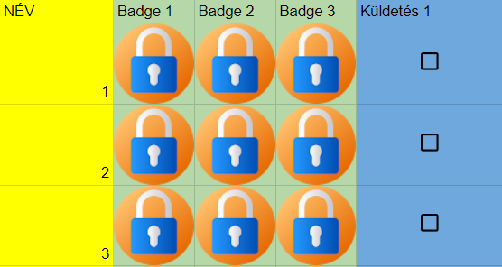
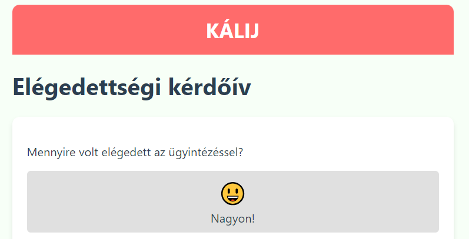

Küldetés projekt
- Küldetés projekt
Alkalmazás, mely játékosított formában motiválja a résztvevőket (badge-k szerzésével, kötelező feladatok elvégzésével)

Elégedettségi kérdőív
- Elégedettségi
Grafikus felületű visszajelzőrendszer. A kitöltők számát és a kérdésenkénti válaszokat grafikonon megjeleníti.
Google sites